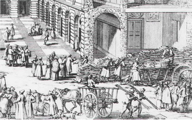

Södermalm i tid och rum
RYSSGÅRDEN Ryssgården ligger mellan Södermalmstorg, Katarinavägen och Peter Myndes backe. Från Ryssgården når man tunnelbanestationen Slussen och huvudentrén till Stockholms stadsmuseum. En dominerande byggnad är Stockholms sjömanshem vid gårdens södra sida med adress Peter Myndes backe 3. 1932 1952 2005 2013 Åke Abrahamsson Utdrag ur Stadsvandringar / Stockholms stadsmuseum. 18. - 1998. - S. 25-28
Tsaren söker handelskvarter
{kind=link}
{kind=link}
Ryssarna var där av samma anledning som svenskar i Ryssland: for att bedriva handel. I Novgorod fanns ett gotländskt handelsfaktori redan på 1100-talet, senare avlöst av en "fri handelsgård" för svenska köpmän. Ryssarna i sin tur hade rätt att sälja sina varor i den svenska staden Reval. När Sverige och Ryssland tillfälligt slöt fred i Stolbova 1617 ville tsaren gå ett steg längre. Svenskarna erbjöds handelsplatser i Pskov och Moskva mot att ryska köpman skulle få etablera sig i Stockholm och Viborg. Så bestämdes också.
Första åtgärden var att 1636 utge en ordningsstadga for ryska köpman i Stockholm. På stadens bekostnad byggdes så året därpå 21 "ryssbodar" vid Brunnsgrand och en "ryssvåg" i mynningen mot Skeppsbron. Lösningen var dock temporär, Skeppsbron skulle just byggas om till paradgata "med stora och sköna hus till stadens ära och nytta", och då passade det sig inte att ha oborstade "moskoviter" inpå knutarna.
Samtidigt anmodades därför staden att upplåta mark och iordningställa en permanent handelsgård vid nedre Stadsgården. Schaktningsarbetena påbörjades 1638 och på nyåret 1641 stod den nya "Ryssgården" färdig. Platsen ner mot den för ryssbåtarna, "lodjorna", reserverade skeppsbryggan kom att kallas Ryssgårdstorget. Nar köpmännen anlände i början av juni - de brukade stanna tills slutet av oktober - var de gamla bodarna vid Skeppsbron rivna. Ryssarna kände sig illa behandlade, men blidkades när de fick se den nya anläggningen, trots att den (som det sades) låg utanför själva staden.
En stad i staden
Utanför Söderport, strax nedanför Södermalmstorg, hade det i själva verket uppförts en stad i staden. Omgärdade av plank och träbodar låg ett flertal kasernliknande magasin i korsvirke och tegel, som de utländska gästerna nu tog i besittning. Totalt rörde det sig om 31 bodar, varav 20 fasta. 1654 hade antalet vuxit till 74, ett tecken på att affärerna blomstrade.
Handeln skedde i parti med hjälp av edsvuren tolk och till de varor som utbjöds hörde olika slags pälsskinn, lin, lärft och hampa. Endast vissa saker, som sadlar, remtyg, stövlar och ryska piskor, fick säljas över disk.
Ryssarna hade också tillgång till livsmedelsupplag och matsal, ett vräkhus för varusortering och en särskild badstuga. En av bodarna tjänade som gudstjänstlokal. Till detta kom ett våghus med kontor, där alla varor hade att passera i och för bestämmande av kommunala vågpenningar. Staden fick även in hyra: fyra daler silvermynt per månad för de fasta bodarna, inklusive "bönemagasinet", och litet mindre för träbodarna. Meningen var att hyra ut bodarna billigare till stockholmsköpmän under vintern och våren, men det visade sig att många ryssar valde att stanna kvar året runt.
Svenskt dubbelspel
|
 Ryska pälshandlare i fotsida rockar och andra köpmän inbegripna i en livlig affärsverksamhet. Till höger ses vindragare, järnbärare och mursmäckor i arbete. Detalj ur Wilhelm Swiddes kopparstick från 1691. |
Så småningom bildades en rysk stockholmskoloni, till förtret för stadens borgerskap. Det blev ofta tvister och långdragna rättegångsprocesser. De ryska klagomålen ökade, inte minst mot de höga hyreskostnaderna, ansedda som en orättmätig beskattning. Inför hotet att höja magasinskatten i Novgorod, erbjöds ryssarna att själva uppföra sina bodar. Men det visade sig dyrare än att betala hyra. Samtidigt - detta var 1663 - försäkrades av Kungl. Maj:t att själva handelsplatsen var att betrakta som rysk egendom. De ryska köpmännen visste inte att regeringen året innan lovat bort deras mark, denna gång till det blivande Generalfaktorikontoret. Ryssarna var tvungna att maka åt sig, men Ryssgården blev kvar framför det senare av staden övertagna Södra stadshuset. För de "zariske undersåtharne" innebar grannhuset ingen nackdel. Den ryska handelsgården gavs härigenom bättre skydd och hamnade mer i centrum. |
{kind=link}
Vådan av tobaksrökning
Ryssarna var ett eldfängt släkte. Redan 1652 härjades träbodarna av brand. Värre blev det den 7 augusti 1680, då skyddshelgonet S:t Nicolaus avfirades. En överlastad tobaksrökare råkade då sätta fyr på en av träbodarna. Elden spred sig via en hög av torkad hampa till de andra bodarna och till det just färdiga Södra stadshuset, vars takstolar och övervåning brann av. Magistraten tvingades uppföra sjutton nya trabodar och Tessin den yngre lät ändra om Södra stadshuset i italiensk stil.
"Den 6 december 1694 utplånades Ryssgården helt av en förödande brand som rasade i tre timmar - mellan kl. 9 och 12 på kvällen - och lämnade allt i aska." Träbebyggelse var därefter inte att tänka på, utan staden måste nu bygga upp allt igen i tegel och korsvirke. I anslutning till Södra stadshusets flyglar lät man uppföra två längor med magasin och bodar och en tvärlänga för kontor och våghus. Ryssgården blev alltså en del av stadshuset - och tvärtom.
Men ingen lycka är beständig. Nar det stora Nordiska kriget bröt ut 1700 fann sig de i Stockholm gästande ryssarna plötsligt vara krigsfångar. 58 köpman och 49 köpmansdrängar, skeppare och båtsman sattes i två fängelserum under Rådhuset på Stortorget. I tre dagar lämnades de utan mat och dryck, för att sedan överföras till Barnhusfängelsets arbetsinrättning.
Varor och pengar togs samtidigt i beslag av regeringen. Ryssarna med nytillkomna kamrater sattes strax i arbete - bland annat med det Tessinska slottsbygget. År 1701, efter segern vid Narva, kom fler krigsfångar av vilka fyra generaler inkvarterades i Södra stadshuset. Efter Viborgs fall i juni 1710 krävde Ryssland att de ryska köpmannen med beslagtaget gods skulle återlämnas, men förhandlingarna strandade och ryssarna fick stanna kvar i ett pestdrabbat Stockholm. Deras situation försämrades ju längre kriget led och inför hotet om ryskt anfall, förflyttades 1716 samtliga fångar - mer än sextonhundra - till Visingsborg. Med det stora Nordiska kriget minskade också Ryssgårdens betydelse som handelsplats.
Stadshusgården ockuperas
Under kriget hade den ryska handelsgården hyrts ut till inhemska köpman och låtits förfalla. Efter freden i Nystad 1721 uppmanades Magistraten av regeringen att återställa allt igen. Handelskollegiet uppdrog åt stadsarkitekten Johan Eberhard Carlberg att göra ett renoveringsförslag. Fram till 1700-talets slut presenterade han flera ritningsomgångar och memorial till ett nyuppförande av Ryssgården i sten, men inget hände. Bodarna förföll allt mer. Stockholmsköpmännen som hyrt in sig vägrade att försvinna. Ryssarna hade svårt att få plats och klagade på att allmogen förstörde deras våghus.
Problemet löstes återigen av röde hanen. Den 19 juli 1759 utbröt den "hiskeliga vådeld" som lade stora delar av Maria församling i aska. Södra stadshuset klarade sig, dock inte Ryssgården som helt brann ned. Vad göra? Jo, de ryska köpmannen fick nu i stället flytta in i de 14 magasin som fanns inrymda i stadshusflyglarnas bottenvåning. I nedre Stadsgården lät Carlberg samtidigt bygga ett nytt våghus, att användas även av allmogen, och på privat initiativ tillkom några kortlivade träbodar.
I fortsättningen kom därför Ryssgården att beteckna gårdsrummet mellan Södra stadshusets flyglar. Från början talades om "Övre Ryssgården" och det gamla området som "Yttre Ryssgården", men efterhand var det den inskränkta betydelsen som tog över. Framför allt hos ryssarna själva, vilka med tiden kom att betrakta stadshusmagasinen som rysk egendom. År 1776 anhöll de hos staden om ett stabilare stängsel kring Stadshusgården till skydd för sina varor. Magistraten var dock kallsinnig och ville helst inte kännas vid den gamla traktatsbestämmelsen.
Bodar att hyra
Efter 1788-90 års krig försämrades ryssarnas handelsförmåner i Stockholm, för att återupprättas igen i 1801 års vänskaps- och handelstraktat. Under tiden hade staden börjat använda gårdsplanen som järnupplag.
Med 1808-09 års krig fann sig ryssarna ännu en gång åsidosatta, men kompensationen blev desto större efter fredsslutet. Traktaten från 1801 förlängdes till 1817. Inte bara att stångjärnet togs bort från gårdsplanen Inte bara att stångjärnet togs bort från gårdsplanen och att de ryska köpmännen återfick "sina" magasin. Som eftergift behövde de inte längre betala någon hyra. Trots att ryssarnas rättigheter formellt upphörde 1817, hävdade de också i fortsättningen sin dispositionsrätt. När rysshandeln i praktiken upphörde på 1820-talet, lät ryska konsulatet hyra ut magasinen till stadens köpmän. Drätselkommissionen som hade hand om stadens finanser, försökte 1850 få till stånd en ändring - men förgäves.
Först i samband med sammanbindningsbanans dragande förbi Södra stadshuset kunde frågan lösas. År 1869 gjordes en utredning som visade att de då helt förfallna magasinen hyrdes ut till gross- och viktualiehandlare, vilka tillsammans betalade 2 100 riksdaler i årshyra.
Man utredde också äganderättsförhållandena och konstaterade att själva marken före Stolbovaavtalet 1617 hade hört till Kronan, fastän den 1529 donerats till staden av Gustav Vasa. I förhandlingarna 1879 med Ryssland föreslogs därför ett byte. Om den svenska före detta handelsgården i Moskva återgick i rysk ägo, så skulle svenska staten få tillbaka utrymmena i Stadsgården. Utbytet godkändes och efter mer än 250 år blev Ryssgården återigen svenskt territorium.
Ny hyresvärd för magasinen blev därefter staten. Men staden gav sig inte. År 1894 krävde och fick den sin egendom tillbaka. Under tiden fortsatte lokaluthyrningen till olika firmor som i de gamla ryssmagasinen lagrade sina varor. Några av dem blev senare nyttjade som stadens garage. Avskuren av den förbipasserande järnvägen blev platsen en smutsig bakgård, full av bråte.
När Sammanbindningsbanan anlades på 1870-talet hade den nya järnvägens Södra tunneln sin mynning söder om Ryssgården. Tågen rullade fullt synliga över Ryssgården (där det fanns järnvägsbommar), passerade sedan i en kort tunnel under Brunnsbacken och Restaurang Pelikan och ångade slutligen vidare över broarna mot Centralstationen. I samband med ombyggnaden för Slussen 1950 flyttades tunnelmynningen längre norrut till dagens läge.
På platsen fanns fram till 1950 en vändslinga för spårvagnarna, som gick i Katarinatunneln mellan Slussen och Medborgarplatsen, som var Stockholms föregångare till tunnelbanan. Från vändslingan gick det trappor upp till Södermalmstorg och Katarinavägen.
Stockholms tunnelbana drogs fram hit 1950, och Slussen blev ändstation för gröna linjen. I början av 1960-talet överdäckade man tunnelbanestationen, som numera ligger 7 meter under torgets yta. Stationens huvudentré nås via torget.
{kind=link}
{kind=link}
{kind=link}
{kind=link}